转经轮
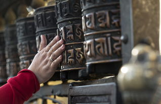
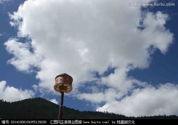
塔尔寺
重要通知：
女性朋友一定要穿到脚踝的裙子或者裤子！！我的小伙伴穿了一条短裤，然后在短裤外面围了一跳丝巾，然后被人“逐出寺庙”。然后只能去车上换了一条裤子才能进塔尔寺。
进去之后确实需要一个导游。差不多应该能算三分靠看，七分靠听。要是没有请导游的话，从进去到出来之后，你留下的印象应该就是，哇！好多的转经筒！哇！好大的佛像！
塔尔寺很多地方是不允许拍照的；还有很多虔诚的信仰者在寺庙的各处做着祈祷的仪式；有很多来自全国各地的信仰者在参拜寺庙中的各个佛像；转经筒是不允许被逆时针转的，要是被僧人看见，会被训斥；寺庙内的门栏是不允许踩踏的，只能跨越，据说是因为僧人们觉得门栏就是佛祖的肩膀；不能用一根手指指向佛像，等等。
塔尔寺还有着号称世界上最贵的佛像之一，金包银银包塔塔包树；酥油花是数九寒天的时候虔诚的僧人用牛油在冷水中捏制而成，因气温的问题，每一到两年都需要重新捏制，现已被列为国家非物质文化，我们去的时候看到的因为温度的原因很多酥油雕像的脚已经开始融化了（不过因为是牛油捏制所以有一股臭味）；壁画同样也是塔尔寺的三绝之一，因为随着时间的流失，壁画也开始泛黑，不过当你细看这些壁画的时候，你会发现壁画中的人物表情都惟妙惟肖，让你不得不双击666。
而藏族人民的虔诚也令人折服，每一个大殿都可以见到磕长头的信众，拜倒、起立、再拜倒，如此五体投地，不停往复。
塔尔寺中午的阳光太强烈了，眼睛都没法睁开，紫外线很强烈，千万要记得防晒啊！不然的话会变 非洲姑娘的~
从拍照的角度，在塔尔寺可以拍出很多好看的照片，阳光充足，寺庙灰砖红墙绿瓦，分分钟都是大片。只是注意寺庙某些地方禁止拍摄，会有僧人在旁监督，发现你拍照便要没收手机，切记切记。
这个寺庙是藏传佛教格鲁派创始人宗喀巴的诞生地，是藏传佛教里除了大昭寺最著名的地方，寺庙很大，结合了佛学院等建筑群。
拓展阅读：大昭寺和布达拉宫
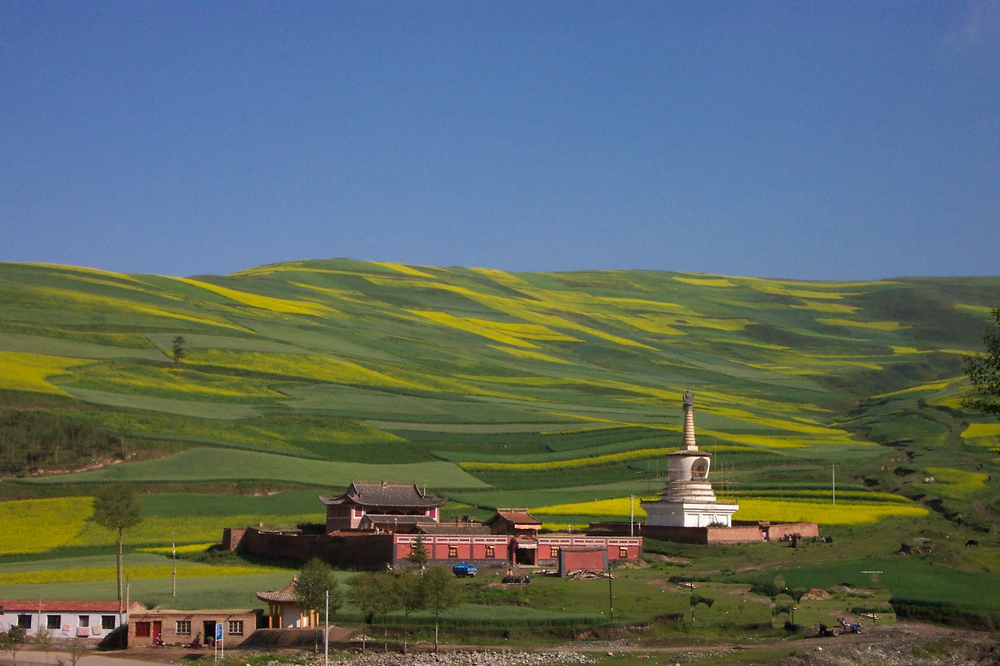
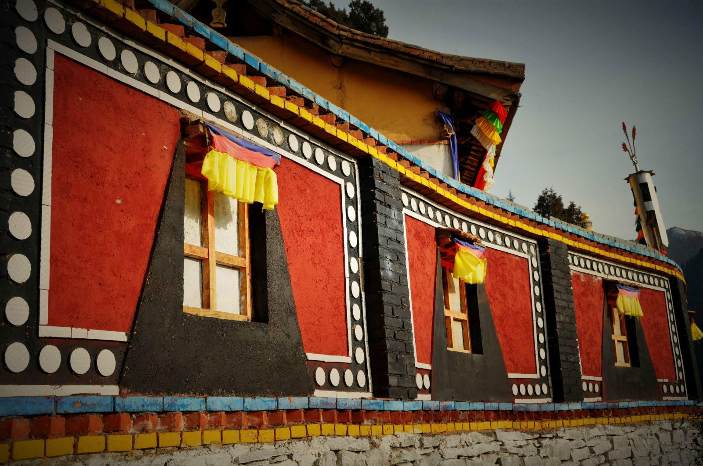
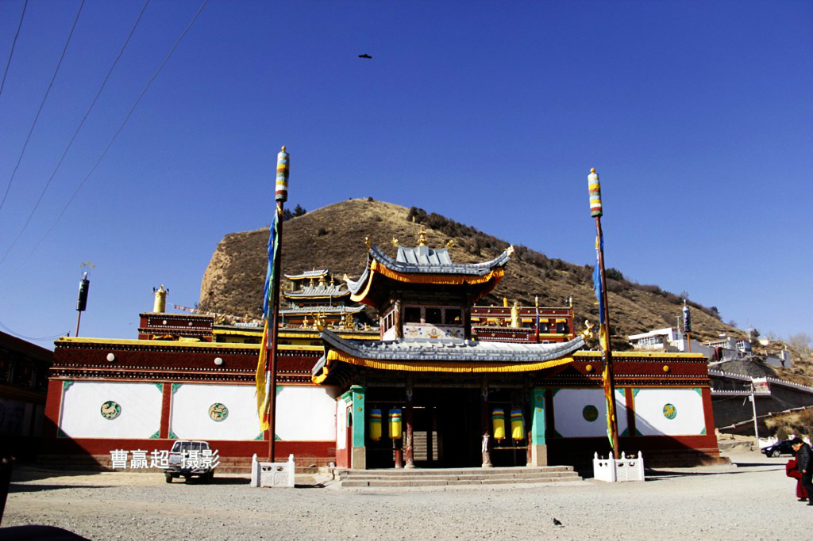

首先布达拉宫是松赞干布为了迎娶唐、尼二位公主所建，后来又逐渐演变为达赖喇嘛的冬宫，是政教合一的统治中心，已经不是传统意义上的寺庙。第二、布达拉宫是依山所建，下部的白宫有相当部分是起支撑作用的空体
西藏文化中表示敬老及和睦共处的「和睦四瑞」图 在藏传佛教中，有一幅常见的有趣构图：一头大象立于大树旁，象背上顶著一猿猴，猴背顶著一兔，兔背上又有一鸟。这张构图称为「四和合」、「和睦四兽」、「和睦四瑞」、「和合四兽」等名称，表示敬老及和睦共处的意义。
「和睦四瑞」图源自《佛陀本生经》，经载：古昔有国名为「卡舒嘉耶」。此国连年战乱无止息，忽有一年百姓安乐，战乱平息，国王便沾沾自喜地以为一己之福泽惠及国土。有一天，国王遇上一位智者。此智者恒修禅定得証神通，而且常作真实语。智者告王曰：「百姓之安乐乃由贵国境一谷中四灵兽和合共处之功德感召，非由大王之福德而起。」王乃亲领侍从前往谷中查察，见一大象立于树旁，背上顶著猴子；猴子又背负一兔，兔背上为一鸟。智者乃曰：「此四兽之坐相乃为大王与国民展示敬老及和睦之意义。小鸟为先住山谷中者，为土中之种子施肥﹔在种子生长为枝叶茂盛的树时，为后来的兔子提供食物﹔在树结果时又为再后来之猿猴提供所需﹔在生长成大树后，最后入住谷中的大象得以遮荫。四兽同意以年龄为尊卑依据，和合共处、扶幼敬老。四兽之功德惠及贵国得享今日之太平。」国王听后心生恭敬，便下令国民学习敬老及融洽共处之道。此寓言后来在「宗教意义」上便引申为：小鸟为本师释迦牟尼佛在成佛前的过去世﹔兔、猴及象则分别为佛陀的亲近弟子──阿难、舍利弗及目犍连三位尊者的过去生。此后，在古印度文化及藏传佛教中，便常引用此典故开示和睦共处、注重社会道德秩序的重要性，并配合以「和睦四瑞」图展示，「和睦四瑞」图遂发展成为和谐、融洽的吉祥象徵
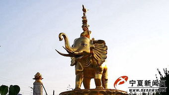
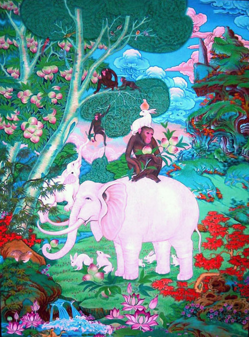
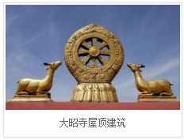
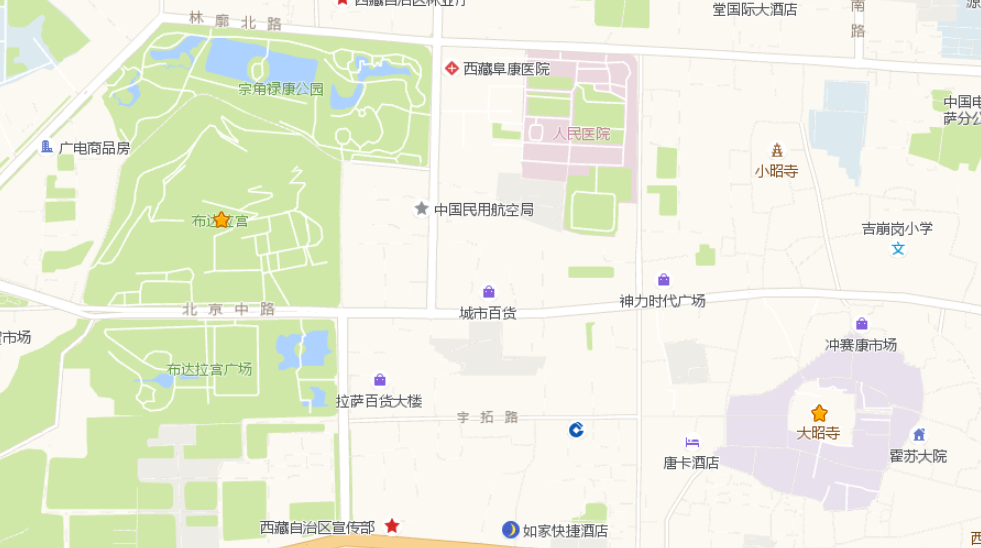
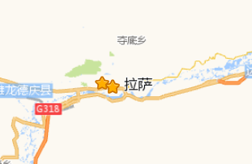
和睦四兽（大象、猴子、兔子、小鸟）
拍照(调饱和度)
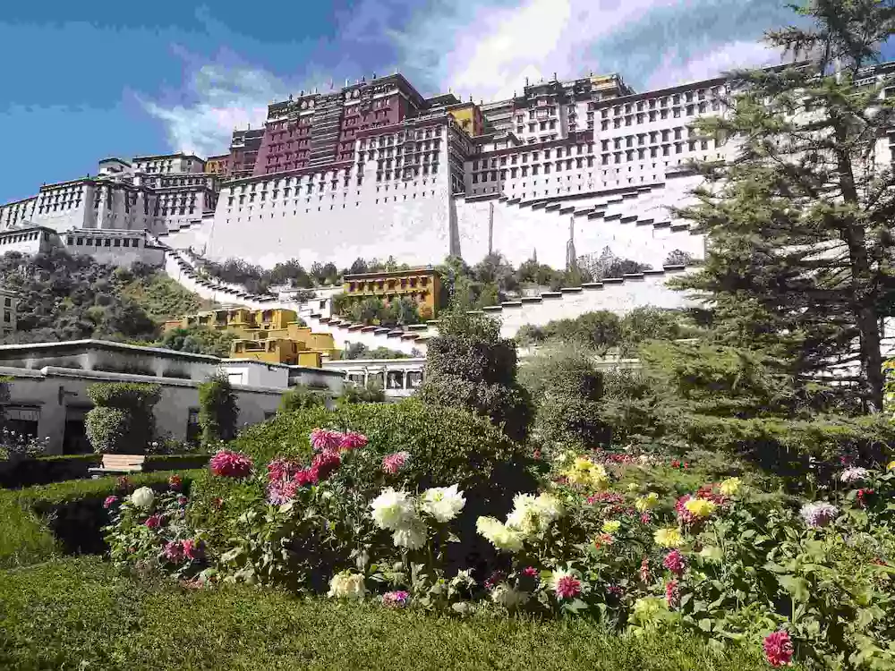
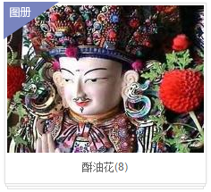
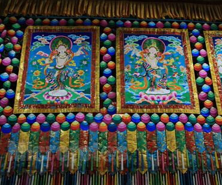
酥油花与壁画、堆绣被誉为塔尔寺的“艺术三绝”
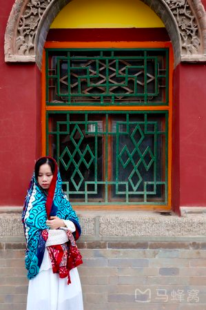
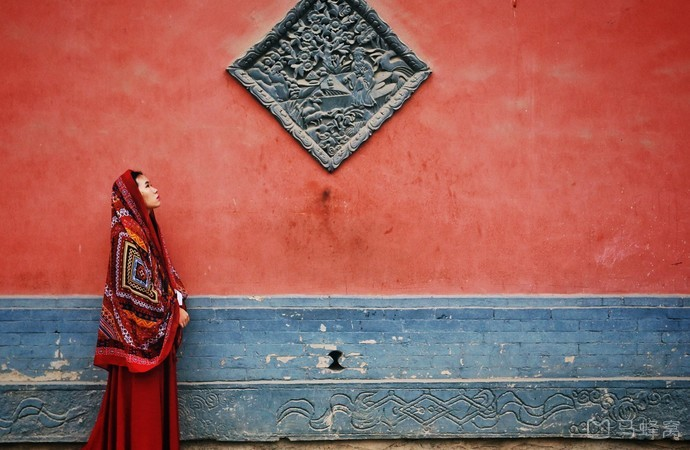
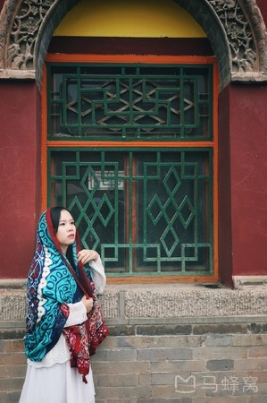
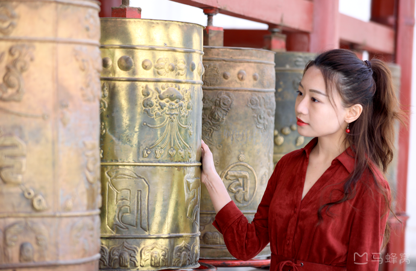
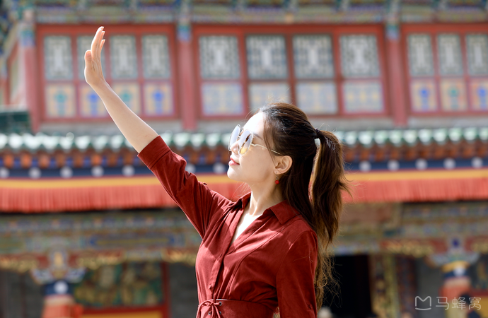
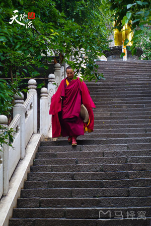
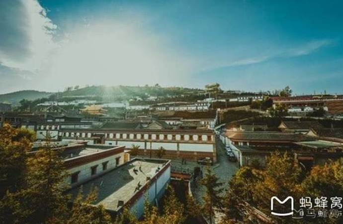
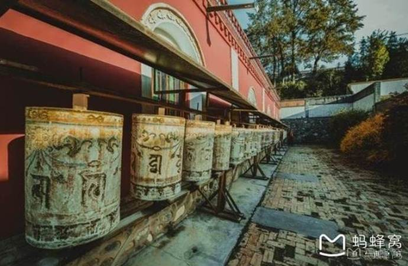